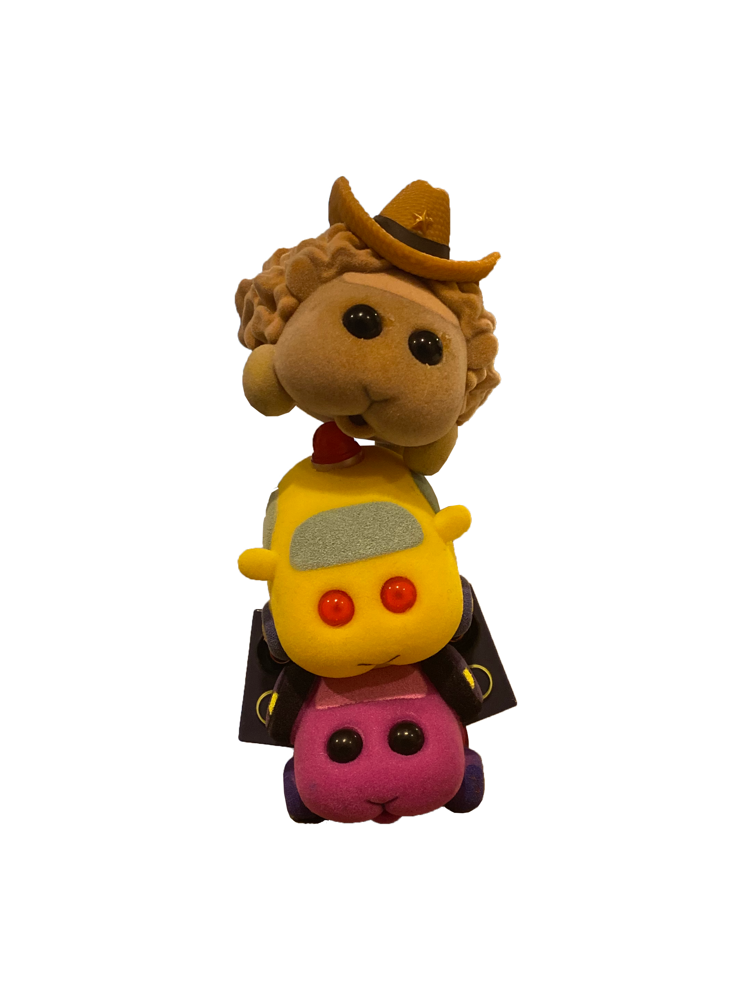
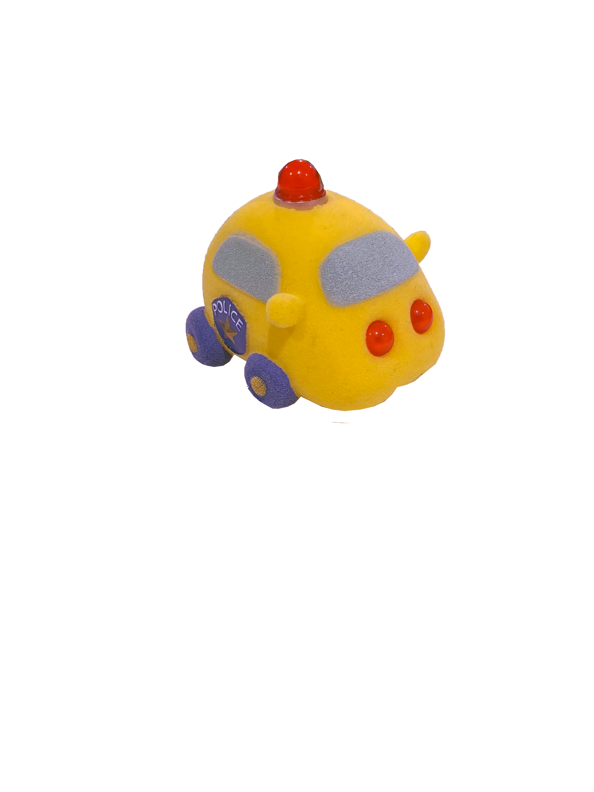
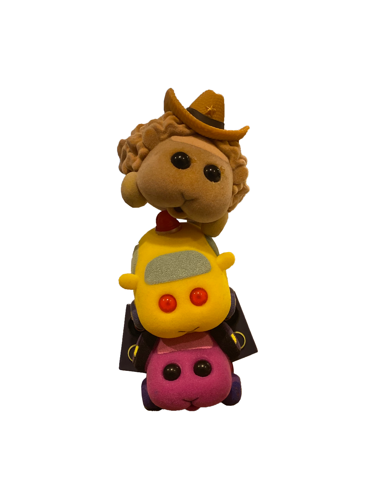
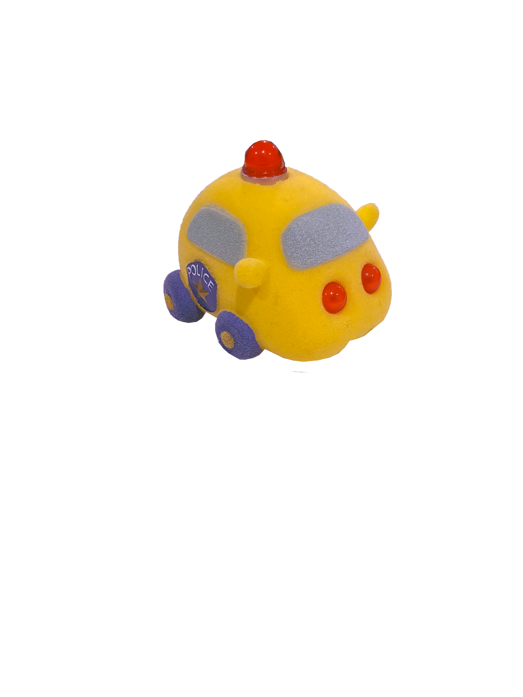
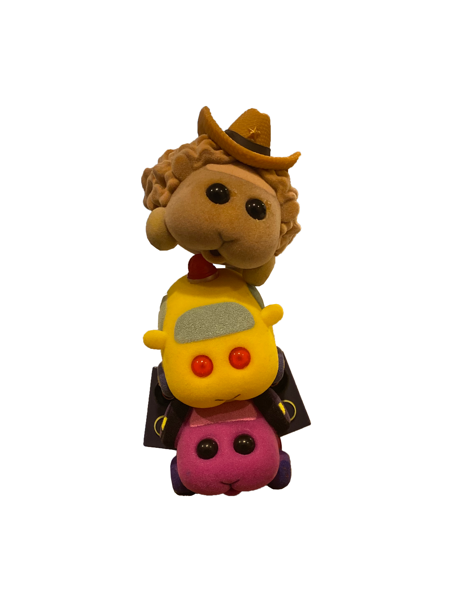
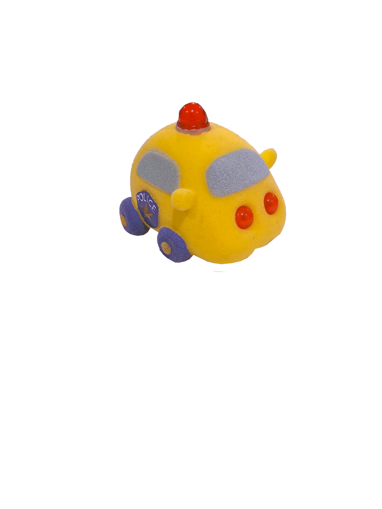
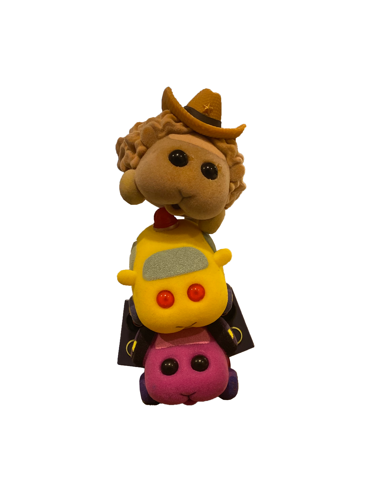
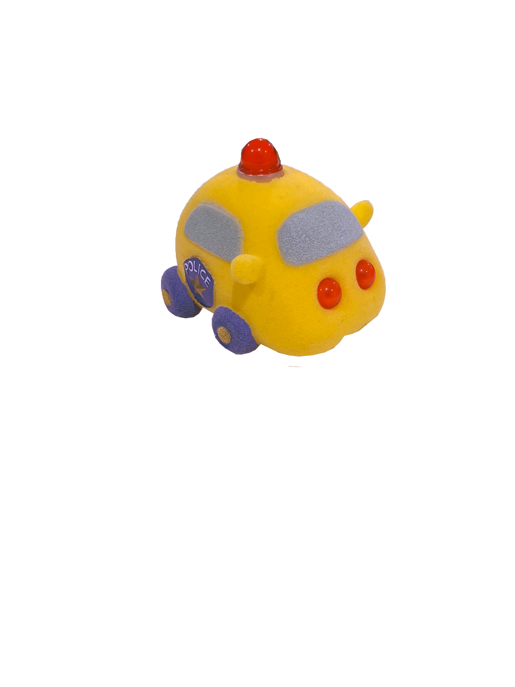

Once upon a time Beezer Butler stumbled across a TikTok showing the silliest little guys she has ever seen, PuiPui Molcars. PuiPui Molcar is a Netflix original series about little hamster cars that go around causing mischief. There are many different kinds of PuiPui in the Molcar universe, including Dj PuiPui, Officer PuiPui, Potato PuiPui, Sushi PuiPui and many, many more. One hallo-weekend in the lil ol mountain town of Harrisonburg, Virginia, Beezer and friends stumble across PuiPui Molcar mystery boxes. She grabs one in hopes of having her own little hamster on wheels that she may love and cherish. The four friends grab the air mattress that they originally came to the Target for and head for the checkout. They pay for their items and wait in the starbucks line with Bryson while he patiently lingers by the counter for his cold brew. Beezer cant wait any longer, the urge to open the PuiPui right then and there consumes her entirely. She rips the box open to be greeted by the most glorious hamster car she could have ever dreamed of, Sushi PuiPui. The first PuiPui Molcar of many. Shown above is Adventurer PuiPui, the Indiana Jones Molcar, my most prized Molcar, and friends.